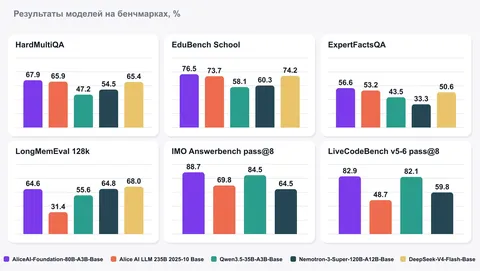

Это MoE-модель с 80 млрд параметров, из которых при генерации активны около 3 млрд. При обучении не использовались веса сторонних опенсорсных моделей. Весь путь до релиза занял около полугода: за это время команда пересобрала корпус, проверила архитектурные решения и гиперпараметры, а также добавила отдельные данные для рассуждений и взаимодействия с инструментами.
По внутренним претрейн-замерам модель обходит более крупные DeepSeek‑V4‑Flash‑Base и Nemotron‑3‑Super‑Base на ряде задач — от фактологических вопросов до математики и кода. На IMO AnswerBench и LiveCodeBench она лидирует среди сравниваемых открытых претрейнов. Предыдущую Alice AI LLM 235B модель также удалось превзойти на нескольких группах задач — при почти втрое меньшем общем и примерно в семь раз меньшем активном числе параметров.
Вместе с весами опубликовали технический отчёт на Хабре. В нём — устройство датасета, scaling laws, стабилизация MoE, абляционные эксперименты и подходы, которые не сработали. Среди интересных наблюдений:
— для корректного подбора гиперпараметров по scaling laws пришлось пересобрать валидационные датасеты так, чтобы loss на них больше коррелировал с качеством модели;
— много внимания уделили стабилизации обучения и борьбе с ростом активаций, который приводил к взрыву обучения;
— одного обучения сложным рассуждениям оказалось недостаточно для агентских навыков — взаимодействия с инструментами пришлось добавлять уже в претрейн.
Модель и бенчмарки (WikiWebFacts и HardMultiQA) уже на Hugging Face. Полный техрепорт — на Хабре.
ML Underhood
